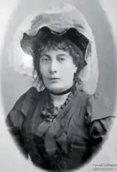

Цікавою постаттю на літературному обрії Полтавщини була письменниця кінця ХІХ – початку ХХ століть Надія Матвіївна Кибальчич (Симонова), яка свої художні твори підписувала Наталка Полтавка. Сьогодні в Україні мало хто знає про цю непересічну письменницю. Хоч її проза та драматургія – невеликі за обсягом, усе ж були помітним явищем у літературному процесі кінця ХІХ – початку ХХ ст. На театральній сцені була досить відома з кінця ХІХ століття іі мелодрама "Катерина Чайківна", що 1893 року одержала першу премію на конкурсі Руського театру у Львові.
Народилася Н. М. Кибальчич у вересні 1857 року на Полтавщині в селі Заріг поблизу Оржиці. Її батько – місцевий землевласник-хлібороб Матвій Симонов (Матвій Номис) – свого часу був відомим громадським, культурно-освітнім діячем, етнографом, фольклористом, а також прозаїком. Мати майбутньої письменниці походила з відомого українського роду Білозерських. У дитячому віці майбутня літераторка познайомилася з Т. Шевченком, який із теплотою ставився до неї, а тому через усе життя пронесла спогади про визначного українця.
В 70-х роках Симонова закінчила Лубенську жіночу гімназію. В ці роки вона почала писати оповідання, новели, спогади українською та російською мовами. Значний внесок у становлення Н. Симонової як письменниці зробили мати Н. Білозерська, тітка Ганна Барвінок та дядько П. Куліш, які радили, підбадьорювали, читали та правили рукописи, передаючи їх до редакцій журналів. Після одруження з випускником Лубенської чоловічої гімназії Костянтином Кибальчичем, що відбулося 1877 р., деякий час мешкала в Санкт-Петербурзі, а також Ясногороді на Волині (нині Житомирщина). На жаль, особисте життя не склалося. Після розлучення у 1884 р. повернулася до батьківського дому і певний час проживала в Зарозі. Намагаючись працею заробити на прожиття, спочатку трудилася економкою в родині Кулішів на хуторі Мотронівка (Чернігівщина, 1885–1890), а пізніше – у багатих господарів на Черкащині (з 1890). На початку 1890-х рр. повернулася до Зарога, де винаймала селянську хату, опікувалася донькою, та хворою старенькою матір’ю. Стосунки з батьком та сестрами остаточно зіпсувалися, коли 1893 року вона отримала першу премію за мелодраматичну п’єсу "Катерина Чайківна" на конкурсі, проведеному Руським народним театром у Львові. Наприкінці ХІХ ст. Наталка Полтавка переселилася до Лубен, де винаймала скромне помешкання та займалася літературною працею, часто навідувалася до Зарога. Оповідання письменниці охоче друкували львівські журнали "Зоря", "Літературно-науковий вісник", "Дзвінок". Критика відзначала популярність таких її оповідань, як "Самовродок", "Драма у хаті", "Кому яке діло", "Чайка". В 90-х роках Надія Матвіївна друкувалась також у журналі "Киевская старина". Зустрічаємо її твори і в альманасі "З потоку життя" (1905). Із 1910 до 1914 року Наталка Полтавка жила в Комишні на Миргородщині, а потім в Лубнах, де вчителювала. У 1914 році їй випало пережити смерть дочки Надії. 4 грудня 1918 року життєвий шлях письменниці закінчився. Похована на кошти лубенської "Просвіти". В останню путь небіжчицю проводжали письменники Л. Яновська, М. Кононенко, Г. Супруненко, П. Капельгородський, археолог Г. Стеллецький, перекладач Ф. Гавриш. Із часом про літераторку перестали пам’ятати не лише в Україні, а й на Полтавщині.